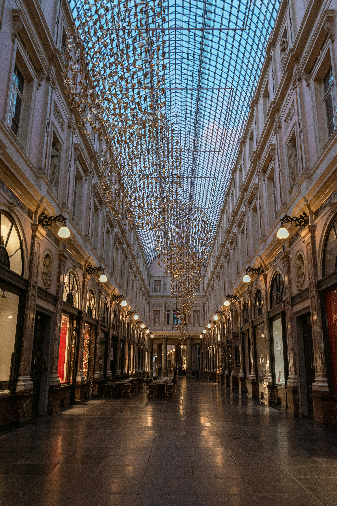
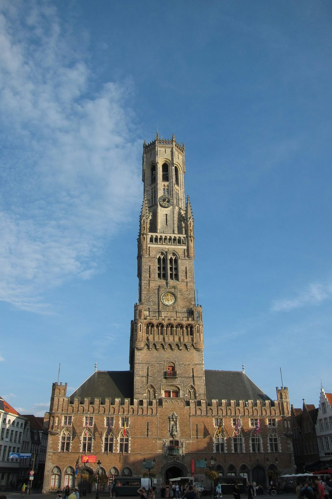
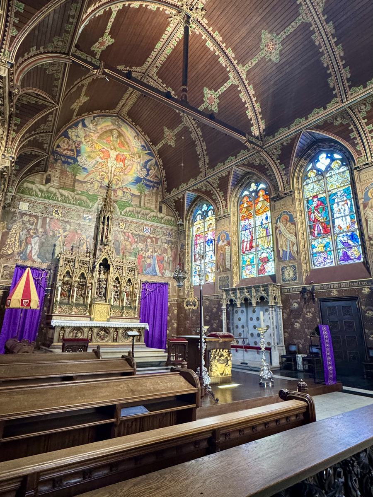

Belgium is one of the most underestimated countries in Europe. Three completely different cities within 90 minutes of each other by train. Brussels is a capital with real bite, contested history, and the best beer in the world. Ghent is a university city of 260,000 that has kept its medieval bones intact while remaining entirely un-touristy. Bruges is the best-preserved medieval city in northern Europe and genuinely as beautiful as people say it is.
The Belgian rail network connects all three with InterCity trains that run frequently throughout the day. You can base yourself in Brussels and day-trip to both, or move between cities as you go. Either approach works.
Brussels:
the Grand Place
and beyond.
Start at the Grand Place. Victor Hugo considered it the most beautiful square in the world, and it is not an unreasonable claim. The square is surrounded by elaborate guild houses rebuilt after the French bombardment of 1695, which destroyed almost everything in two days of artillery fire. The Hotel de Ville, dating from 1402 to 1455, survived intact and remains the centrepiece. The gilded facades around it date almost entirely from the reconstruction, which gives the square an unusual uniformity of scale and grandeur.
The Stepcast Brussels tour begins here and follows a route that covers the city's most significant stops in a logical sequence. From the Grand Place, it takes you east through the Galeries Royales Saint-Hubert, one of the first covered shopping arcades in the world, opened in 1847, with an ornate glass vault running above the shops and cafes inside. From there the tour continues north to the Belgian Comic Strip Centre, housed in a beautiful Art Nouveau building that was designed by Victor Horta, the architect who defined Brussels's most distinctive architectural period.
The route then takes you to the Cathedral of Saint Michael and Gudula, the principal church of Brussels, begun in the 11th century and completed in the 15th, with a Gothic interior that is considerably less visited than it deserves. From there the tour climbs to Mont des Arts, the cultural hill behind the old city centre, which has the best elevated views over the rooftops and spires below. The Palais Royal faces the upper park, the official palace of the Belgian monarchy and open to visitors in summer. The tour then descends to the Place du Grand Sablon, the antiques quarter, a neighbourhood of chocolate shops, antique dealers, and weekend markets that gives a sense of the quieter, more residential Brussels that most visitors miss. The final stop is the Manneken Pis.
The Manneken Pis is smaller than everyone expects. About 61cm tall. Worth seeing, not worth building an itinerary around. The tour ends here, which means you arrive having already seen the best of the city rather than starting with the disappointment.
For the evening, find a traditional Brussels cafe and order Belgian beer with moules frites. The mussels, usually from Zeeland, are steamed in white wine, cream, celery, and onion and served with a large portion of double-fried chips. It is the unofficial national dish and the combination works. The streets around the Grand Place have plenty of options, though the restaurants directly on the square itself are priced for tourists. One street back in any direction and the ratio of locals to visitors improves significantly.
The Stepcast Brussels tour
follows Day 1's exact route.
Grand Place, Galeries Royales Saint-Hubert, Comic Strip Centre, Cathedral, Mont des Arts, Palais Royal, Grand Sablon, Manneken Pis. Audio commentary at every stop. Go at your own pace. First 3 stops completely free.
Try the Brussels tour for free →
Ghent:
medieval city,
un-touristy.
The train from Brussels to Ghent Sint-Pieters takes about 28 to 32 minutes on frequent IC services. From the station, the city centre is about 20 minutes on foot or a short tram ride. The walk is worth doing at least once: it takes you through a stretch of 19th-century residential Ghent before the older centre comes into view.
Sint-Baafskathedral and the Ghent Altarpiece
The first stop in the city centre should be Sint-Baafskathedral. Jan and Hubert van Eyck's The Adoration of the Mystic Lamb, completed in 1432, is one of the most important paintings ever made. A polyptych of 12 panels showing a complex theological vision, it is widely regarded as a foundational work of Western European painting. The Flemish naturalism, the detail of the individual faces, the sense of space and light: none of it had been done before at this level.
The altarpiece has had a violent history. Napoleon took it to Paris. German forces removed it twice. During the Second World War it was hidden in a salt mine in Austria. After liberation it was returned to Ghent, where it now sits in a dedicated display room in the cathedral, restored and protected behind glass. Advance booking is required. Check the official website for current entry prices and opening times.
The panel showing the "Just Judges" is a 1945 copy. The original was stolen in 1934 and has never been recovered. The ransom note asked for money and the release of a prisoner. Neither condition was met. The thief died without revealing where it was. The painting has not been found.
Gravensteen Castle
Gravensteen, the Castle of the Counts, sits in the centre of the city, surrounded by water and largely intact. It was built from 1180 by Philip of Alsace, Count of Flanders, on the site of an earlier fortress, and its stone towers and defensive walls give the most direct sense of medieval Ghent available. Cross the bridge and walk through it. The views from the battlements over the city are worth the climb.
Graslei and Korenlei
The twin quays facing each other across the Leie river are the most photographed view in Ghent. The Graslei and Korenlei are lined with guild houses and warehouses from the 12th to 17th centuries, each facade telling a different chapter of the city's commercial history as a major medieval trading centre. Walk both sides and cross the bridges between them. The reflected light off the water in the afternoon is what makes the photographs, but the buildings themselves reward attention at any hour.
Patershol
Behind Gravensteen, the medieval neighbourhood of Patershol is a tangle of narrow cobbled streets that was once one of the poorest areas of the city and is now a calm residential quarter with some of the best small restaurants in Ghent. Come here for lunch, or return in the evening. It has the quality of a neighbourhood that has been improved without being destroyed: the streets are the same, the restaurants are serious, and there are almost no tourist shops.

Bruges:
the medieval city
intact.
The train from Ghent to Bruges takes about 25 minutes. If you are coming directly from Brussels, the direct journey takes about 60 minutes. Bruges station is a short walk or bus ride from the Grote Markt at the centre of the old city.
Bruges is the best-preserved medieval city in northern Europe. The canal network, the guild houses, the belfry, the churches: the city lost its commercial importance in the 15th century when the Zwin river silted up and trade moved to Antwerp, and that decline preserved it. What was too unfashionable to demolish is now what makes the city extraordinary.
The Stepcast Bruges tour starts at the Grote Markt, the central market square, and covers the city in a route that takes in its most significant sites without doubling back. From the Markt, you visit the Belfort, the medieval belfry that has defined the city's skyline since the 13th century. The tour then moves to Burg Square, the smaller civic square just behind the Markt, and the Basilica of the Holy Blood, one of the most important pilgrimage sites in northern Europe, which holds a relic believed to contain the blood of Christ, brought from Jerusalem in the 12th century.
The route continues down to the Vismarkt and Huidenvettersplein, the former fish and tanners' markets by the canal, where the oldest part of the city's commercial waterfront is still legible in the street pattern. From there the tour takes you to Onze-Lieve-Vrouwekerk, the Church of Our Lady, which contains Michelangelo's Madonna of Bruges: a white marble sculpture completed around 1501, and the only work Michelangelo sent abroad during his lifetime. A Bruges merchant bought it in Italy and brought it here. It sat in this church for 500 years, interrupted only when Napoleon removed it to Paris and when German forces took it during both world wars.
The tour then passes Sint-Janshospitaal, one of the oldest surviving hospital buildings in Europe, founded in the 12th century and now a museum, before reaching De Halve Maan Brewery, the last family brewery in the historic centre of Bruges, operating since 1856. From there the route leads to the Begijnhof, the walled courtyard that was home to the Beguines, a lay religious movement of women who lived communally without taking formal religious vows, and ends at the Minnewater, the Lake of Love, the southern limit of the old city and one of the quietest spots in Bruges.
Bruges is very busy in summer. The early morning before 9am is the best time to see the Markt and the canals with any sense of the city as it actually is. By midday in July it is crowded. Starting the Stepcast tour early gets you to the quieter southern stops as the day visitors are still arriving.
The Stepcast Bruges tour
follows Day 3's exact route.
Grote Markt, Belfort, Burg Square, Basilica of the Holy Blood, the canal markets, Onze-Lieve-Vrouwekerk, Sint-Janshospitaal, De Halve Maan, Begijnhof, Minnewater. Audio commentary at every stop. Go at your own pace. First 3 stops completely free.
Try the Bruges tour for free →Practical things
worth knowing.

Getting there
Brussels Airport (BRU) has a direct train, the Airport Express, to Brussels Central, Midi, and Nord stations, running every 15 to 20 minutes. The journey takes about 20 minutes and costs around 10 to 12 euros. Buy a ticket at the airport station on arrival.
Brussels South Charleroi Airport (CRL), the Ryanair hub, is served by bus to Brussels Midi. The journey takes about one hour and costs around 15 to 17 euros with Flibco or similar services. This is a genuine hour's journey, not a quick hop: factor it into your planning when you book, especially for early departures from the city.
Getting around Belgium
InterCity trains connect Brussels, Ghent, and Bruges reliably and at reasonable cost. Brussels to Ghent is about 28 to 32 minutes. Ghent to Bruges is about 25 minutes. Brussels to Bruges direct is about 60 minutes. Trains run very frequently throughout the day. Single tickets are good value. If you are under 26, the Go Pass 10 gives ten single journeys at a reduced rate. For older travellers, a standard day return depending on your route may work out cheaper than two singles: check at the station or via the SNCB website.
Language
Brussels is officially bilingual: French and Dutch/Flemish. Street signs appear in both languages and the city switches between them depending on the neighbourhood. Ghent and Bruges are in Flanders, where the primary language is Dutch/Flemish. In all three cities, English is very widely spoken and you will rarely need anything else as a visitor.
Beer
Belgium has the most complex beer culture in the world. Trappist beers are brewed in monastery grounds under monastic supervision: Chimay, Orval, Rochefort, Westmalle, Westvleteren, and others, each with a distinct character. Lambic is spontaneously fermented using wild airborne yeast in the Brussels region and the Senne valley, producing a sour, acidic base beer unlike anything brewed by conventional methods. Gueuze blends young and old lambic and undergoes a secondary fermentation in the bottle. Saison originated in Wallonia as a farmhouse ale. A good Belgian cafe menu will list 50 or more different beers. Ask what they would recommend with whatever you are eating: the pairing of food and beer is taken seriously here in a way it rarely is elsewhere.
Food
Moules frites are steamed mussels, usually from Zeeland, in white wine, cream, celery, and onion, served with double-fried chips. The chips matter as much as the mussels. Belgian frites from a frituur are double-cooked: blanched and then fried, giving a crust and a soft interior that single-cooked chips cannot match. They are served with a range of sauces, of which andalouse and samurai are the most characteristically Belgian. Belgian chocolate: Neuhaus invented the praline in Brussels in 1912 and the tradition has held across generations of chocolatiers. Buy from a proper chocolatier, not a tourist shop. Waffles: the Brussels waffle is rectangular, lighter, and meant to be eaten plain or with fruit. The Liege waffle is round, dense, caramelised from pearl sugar worked into the dough, and eaten warm from a street stall. They are completely different things. Both are worth trying.
Your 3-day Belgium
itinerary at a glance.
Walk Brussels with
a guide in your pocket.
The Stepcast Brussels tour covers the Grand Place, Galeries Royales Saint-Hubert, Comic Strip Centre, Cathedral, Mont des Arts, Palais Royal, Grand Sablon, and Manneken Pis. Audio commentary at every stop. No booking, no group, no fixed start time. First 3 stops completely free.
Try the Brussels tour for free →